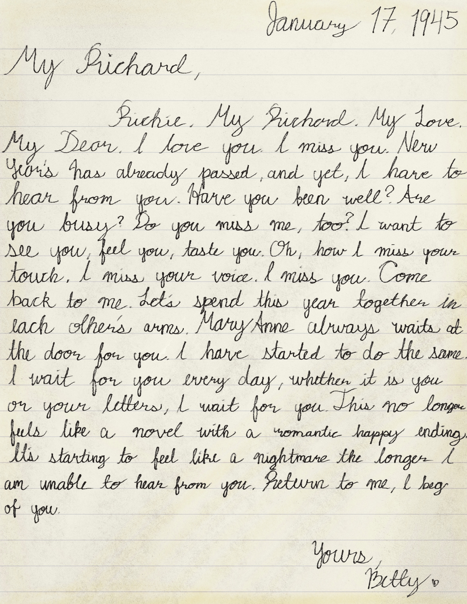

Transcription
January 17, 1945
My Richard,
Richie. My Richard. My Love. My Dear. I love you. I miss you. New Year's has already passed, and yet, I have [yet] to hear from you. Have you been well? Are you busy? Do you miss me, too? I want to see you, feel you, taste you. Oh, how I miss your touch. I miss your voice. I miss you. Come back to me. Let's spend this year together in each other's arms. Mary Anne always waits at the door for you. I have started to do the same. I wait for you every day, whether it is you or your letters, I wait for you. This no longer feels like a novel with a romantic happy ending. It's starting to feel like a nightmare the longer I am unable to hear from you. Return to me, I beg of you.
Yours,
Betty
Gallery

Description
Photograph of Mary Anne, Richard and Betty's old-fashioned Scottish Collie.
Back to Home - Previous Letter - Next Letter